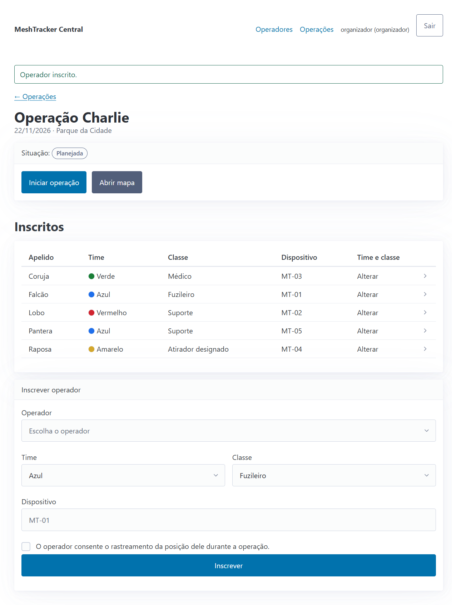
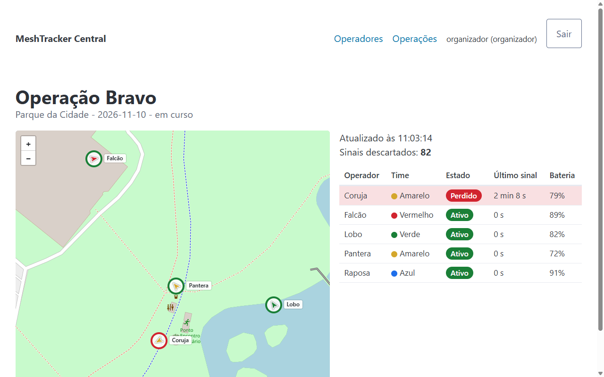
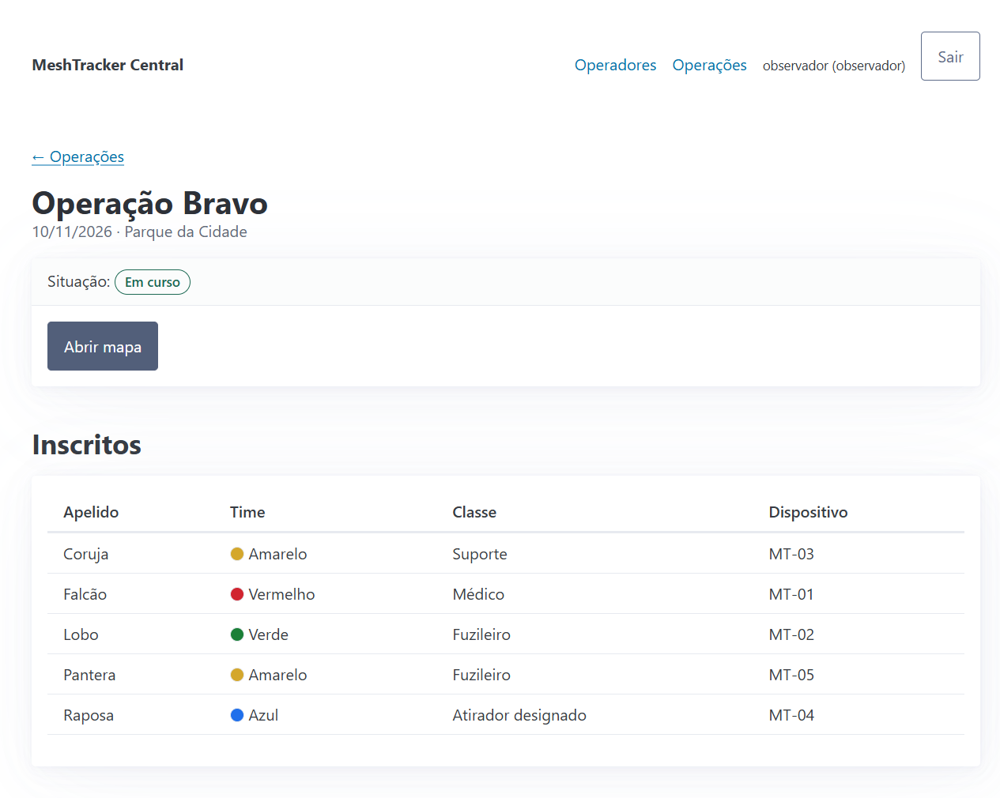

MeshTrackerCentral
Quem está em campo, onde e há quanto tempo sem sinal: o painel do organizador de operações de airsoft do DF.
O operador teria de se cadastrar de novo a cada operação.
Cada dispositivo esquece quem some por 2 minutos, e ninguém vê o conjunto.
5 em sinal
1 perdido
Sinais simulados. Problema ainda não confirmado com a federação.
Inscrever semrecadastrar
Demo ao vivoacontece no navegador
FalcãoLoboCorujaRaposaPantera
Já cadastrados, os 5 entram na Operação Charlie só com time, classe, dispositivo e consentimento.
Três recusas
R2operador repetidoUNIQUE no banco
R3dispositivo repetidoUNIQUE no banco
R5sem consentimento

Meta da H1: até 3 min
554ms
por script; mede o fluxo, não uma pessoa
Quem estáperdido, e háquanto tempo
Demo ao vivoacontece no navegador
Estado pelo tempo desde o último sinal (R9)
ativoaté 60 s
atrasadoaté 120 s
perdidoacima de 120 s
sem sinal
O relógio é injetado nos testes: 59, 60, 61, 119, 120 e 121 s.
94ms
Por script, mediana. Meta da H2: apontar o perdido em até 10 s.

A lista põe o perdido no topo. O mapa atualiza a cada 3 s.
202MT-99, não inscrito: só conta como descartado (R7)
200Pacote repetido: duplicado, não grava de novo (R8)
Observador só lê.API exige token.
Demo ao vivoacontece no navegador
403Observador (R10). Só lê: vê a lista e o mapa, sem formulários. Toda escrita dele recebe 403.
401API (R11). Sem token.
201Com token: pacote gravado.
200O mesmo pacote de novo: duplicado.

É o mesmo contrato HTTP que o simulador usa e que um gateway real usaria (ADR-003).
Quatro decisões
1RecorteFica fora o que exige hardware ou outro sistema: MQTT, gateway real, integração com o operational-command.
2Flask e SQLiteNo lugar de Vue, Express e MongoDB: eram quatro serviços e um build de front-end para nove dias, trabalhando sozinho (ADR-002).
3HTTPNo lugar de MQTT: o menor contrato que leva o sinal à regra e ao mapa. O MQTT volta com o gateway real (ADR-003).
4Testes por regra474 testes verdes, 66 deles de segurança. As barras contam pelo nome do teste: é o piso.
16R1
5R2
6R3
7R4
4R5
17R6
13R7
11R8
39R9
16R10
14R11
Limites
Próximos passos
- Quem executou os roteiros foi o autor, no papel de organizador.
- Os sinais são simulados e os tempos vieram de script.
- O fundo do mapa precisa de internet.
- Falta definir por quanto tempo guardar as posições (LGPD).
- Um app de celular ou um gateway MeshTracker por MQTT, enviando ao mesmo contrato HTTP.
- Conversar com a federação.
- Incremento 3 e tag v1.0 em 08/12.
- Demo Day em 15/12.
Obrigado.
Perguntas?
Código no branchdemo/mvp-10-11
APIdocs/api.md
Para reproduzirdocs/guia-de-reproducao.md
Evidênciasdocs/evidencias/